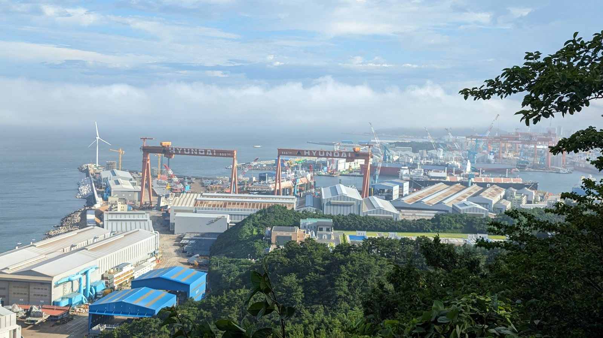
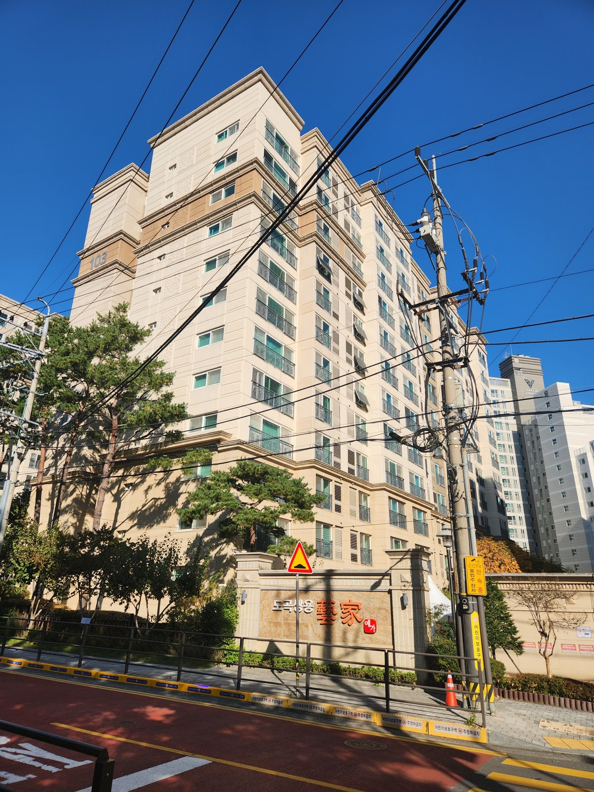

[한국경제 민낯①] 사회적으로 생산한 부 — 자산이 일보다 빨리 불어나는 나라, 부는 공정하게 나뉘는가
2025년 가계 순자산 1년 새 1167조원 증가, 같은 해 피용자보수 1273조원의 92%
노동소득분배율 2023년 68.8%에서 2025년 66.8%로 2년 연속 하락
2025년 3월 말 순자산 지니계수 0.625, 상위 10% 가구가 순자산 46.1% 보유
AI경제저널=김갑봉 기자 | 지난해 한국 가계와 비영리단체의 순자산이 1년 새 1167조원 불었다. 같은 해 임금을 받고 일한 사람에게 간 피용자보수는 1273조원이다. 국가데이터처와 한국은행이 낸 2025년 국민대차대조표, 한국은행 국민계정 잠정치다. 자산이 불어난 폭이 한 해 피용자보수의 9할을 넘었다.
사회가 한 해 동안 함께 만든 부는 가계와 기업과 정부에 어떻게 나뉘는가. 가계 안에서는 일해서 버는 사람과 가진 것으로 버는 사람에게 어떻게 나뉘는가. 한국경제의 민낯은 이 장부에서 드러난다. 첫 편은 그 장부를 펼친다.
한 해 2705조원, 세 주체의 몫
2025년 명목 국민총처분가능소득은 2705조7000억원으로 1년 전보다 4.4% 늘었다. 가계 몫이 1508조원으로 55.7%, 기업이 650조9000억원으로 24.1%, 정부가 546조8000억원으로 20.2%다. 한국은행이 올해 6월 낸 2025년 국민계정 잠정치다.
비중은 기업 쪽으로 기울었다. 2023년 21.5%이던 기업 몫이 2년 만에 24.1%로 올랐다. 같은 기간 가계 몫은 56.5%에서 55.7%로 내려왔다. 다만 2023년은 반도체 불황으로 기업 몫이 낮았던 해다. 2021년 23.5%와 견주면 0.6%포인트 높다.
가계가 실제로 쓰고 모을 수 있는 돈은 더 더디게 늘었다. 지난해 1인당 국민총소득이 4.6% 늘 때 1인당 가계총처분가능소득은 4.1% 늘어 2917만7000원이 됐다. 1인당 국민총소득 5257만원의 55.5%다. 국민소득 통계에 잡힌 1인당 소득과 지갑에 들어온 소득 사이에 그만큼 틈이 있다.
일한 몫은 두 해째 줄었다
국민소득 가운데 고용된 사람에게 간 몫을 노동소득분배율이라 한다. 한국은행 통계표에는 피용자보수비율이라는 이름으로 나온다. 2023년 68.8%에서 2024년 67.4%, 2025년 66.8%로 두 해 내리 떨어졌다. 2021년 66.0%보다는 아직 높다. 지난해 피용자보수가 3.8% 늘 때 영업잉여는 6.3% 늘었다.
이 연재가 말하는 일하는 사람은 임금노동자만이 아니다. 자영업자와 농민, 중소기업 사장과 관리자, 공무원과 금융회사 직원까지 일해서 버는 모든 사람이다. 맞은편에는 이자와 배당, 임대료처럼 가진 것에서 나오는 소득과 자산값 상승에서 오는 이득이 있다.
그래서 이 지표에는 한계가 있다. 자영업자 소득은 통째로 영업잉여에 잡힌다. 사장이 직접 일한 대가도 일한 몫으로 세지 않는다는 뜻이다. 길게 보면 1990년 56.3%에서 올라온 값이다. 다만 그 상승에는 임금노동자가 늘고 자영업자가 줄어든 효과가 섞여 있다. e-나라지표 해설은 자영업자 몫을 보정한 지표가 추세적으로 내려갔다고 적는다.
올해 들어 간격은 더 벌어졌다. 반도체 수출이 성장을 이끈 2분기에 총영업잉여는 직전 분기보다 18.5% 늘었고 피용자보수는 1.9% 늘었다. 한국은행은 영업잉여 증가를 제조업, 금융·보험업이 이끌었다고 설명했다. 반도체 경기가 꺾이면 이 간격도 달라질 수 있다.

자산은 소득보다 빨리 불었다
2025년 말 국민순자산은 2경4561조원이다. 같은 해 명목 국내총생산 2676조7000억원의 9.2배다. 이 가운데 가계와 비영리단체 몫이 1경4200조원으로 57.8%다. 가계 순자산은 1년 새 9.0% 늘었다. 가계소득 증가율 4.0%의 두 배를 넘는다.
무엇이 순자산을 늘렸는지도 장부에 남았다. 주택이 534조원, 주식과 투자펀드가 525조원 늘었다. 2024년에는 주식과 펀드가 오히려 14조원 줄었다. 지난해 말 가계 순자산의 50.4%는 여전히 주택이다. 1인당 가계 순자산은 2억7475만원으로 9.1% 늘었다.
나라 전체 자산은 땅에 쏠려 있다. 비금융자산 2경3291조원 가운데 토지가 1경2660조원으로 54.4%다. 기계와 장비인 설비자산 1457조원의 8.7배, 지식재산생산물 822조원의 15배를 넘는다. 토지는 새로 만들어지지 않는 자산이다.
토마 피케티(Thomas Piketty)는 『21세기 자본』에서 자본수익률이 경제성장률을 웃돌면 부가 소득보다 빨리 쌓인다고 봤다. 한 해 숫자로 그 명제를 증명할 수는 없다. 지난해 나라 전체 순자산은 2.2% 늘어 소득 증가율 4.4%보다 오히려 느렸다. 불어난 것은 가계 쪽 자산이었다. 집값과 주가가 오른 몫은 일한 시간과 관계없이 가진 쪽에 쌓였다.

가계 안에서 더 크게 갈린다
자산은 그 전부터 고르게 나뉘어 있지 않았다. 지난해 12월 나온 가계금융복지조사를 보면 주가가 크게 오르기 전인 지난해 3월 말 순자산 지니계수는 0.625로 1년 전 0.612보다 올랐다. 순자산 상위 10% 가구가 전체 순자산의 46.1%를 가졌다. 1년 전보다 1.6%포인트 늘어난 몫이다.
소득도 같은 방향이다. 2024년 가구 평균 근로소득은 2.4% 늘었고 재산소득은 9.8% 늘었다. 한국은행 조사국 이재호 차장 등은 올해 6월 이슈노트 「우리 경제 가계 양극화의 실태와 파급영향」에서 자산 격차와 소득 격차가 함께 벌어지는 지금 상황을 복합 양극화라고 불렀다. 순자산 지니계수는 2017년 0.584에서 2025년 0.625로 올랐다.
순자산과 소득이 모두 하위 20%인 가구 가운데 20~30대 비중은 2020년 7.9%에서 2025년 15.2%로 늘었다. 청년층 안에서 소득 축적만으로 자산 사다리에 오르지 못하는 계층이 크게 늘었다는 진단이다. 보고서는 120개국 패널 자료를 분석해 자산 상위 10% 비중이 1%포인트 오르면 2년 뒤 총요소생산성이 0.16% 낮아진다고 추정했다.
무엇을 어떻게 나눌 것인가
기업 몫이 커진 것을 나쁘게만 볼 일은 아니다. 기업소득은 투자 재원이 되고, 지난해 주가 상승은 주식을 가진 가계의 금융자산도 늘렸다. 다만 명목 국내총생산에서 총고정자본형성이 차지하는 비중은 2023년 31.4%에서 2025년 28.4%로 내려왔다. 실질 건설투자가 9.7% 줄어든 탓이 크지만, 설비투자도 1.5% 느는 데 그쳤다.
보고서는 소득을 보전하는 재분배만으로는 한계가 있다고 봤다. 부동산에 몰린 가계 자산을 생산적 부문으로 돌리고, 근로소득으로 자산을 모으는 길이 약해지지 않게 제도를 점검하자고 했다. 기술 변화에 맞춰 조세 기반을 안정시키자는 제언도 붙였다.
인공지능은 이 질문을 더 무겁게 한다. 보고서는 인공지능이 로봇 기술과 맞물려 저소득층과 경력 초기 청년의 직무를 대체하고 있어 앞으로 소득 격차를 키울 가능성이 높다고 봤다. 기계가 만든 부가가치가 임금과 소비로 돌아오는 통로가 어디에 있는지는 아직 어느 장부에도 없다.
지난해 가계 순자산이 늘어난 1167조원이 어느 가구에 얼마씩 돌아갔는지 국민대차대조표는 가르지 않는다. 일해서 번 돈으로 그 몫에 닿은 가구가 얼마인지도 적혀 있지 않다.
참고문헌
기관 자료
- "2024년 국민계정(확정) 및 2025년 국민계정(잠정)", 한국은행 경제통계2국 국민소득부, 2026.06.09. 17쪽(국민총처분가능소득 2705.7조원, 가계 1508.0조원 55.7%·기업 650.9조원 24.1%·정부 546.8조원 20.2%, 피용자보수 1273.0조원 3.8%·영업잉여 587.3조원 6.3%, 2024년 4.7%·11.7%), 25쪽 주요지표(피용자보수비율 2023년 68.8%·2024년 67.4%·2025년 66.8%, 제도부문별 가계 비중 2023년 56.5%·기업 21.5%, 총고정자본형성 비중 2023년 31.4%·2025년 28.4%), 6쪽 2025년 실질 건설투자 -9.7%·설비투자 1.5%, 9쪽 1인당 국민총소득 5257.0만원(4.6%)·1인당 가계총처분가능소득 2917.7만원(4.1%). https://eiec.kdi.re.kr/policy/materialView.do?num=282377
- "2026년 2/4분기 국민소득(잠정)", 한국은행 경제통계2국 국민소득부, 2026.09.08. 6쪽 계절조정 전기 대비 피용자보수 1.9%·총영업잉여 18.5%, 영업잉여는 제조업, 금융 및 보험업 중심. https://eiec.kdi.re.kr/policy/materialView.do?num=286470
- "2025년 국민대차대조표 결과(잠정)", 국가데이터처 경제통계국 소득통계과·한국은행 경제통계국, 2026.07.22. 국민순자산 2경4561.5조원(2.2%), 가계 및 비영리단체 순자산 1경4200.5조원(1167.3조원, 9.0%, 비중 57.8%), 지분증권 및 투자펀드 +525조원·주택 +534조원(2024년 -14조원·+246조원), 가계순자산 중 주택 50.4%, 비금융자산 2경3291조원 중 토지 1경2660조원(54.4%)·설비자산 1457조원·지식재산생산물 822조원. https://mods.go.kr/board.es?act=view&bid=11865&list_no=446072&mainXml=Y&mid=a10301010000
- "2025년 가계금융복지조사 결과", 국가데이터처·한국은행·금융감독원, 2025.12.04. 2025년 3월 말 순자산 지니계수 0.625(2024년 0.612), 순자산 10분위 점유율 46.1%(1.6%포인트 증가), 2024년 근로소득 4747만원(2.4%)·재산소득 614만원(9.8%). https://www.korea.kr/briefing/policyBriefingView.do?newsId=156733201
- "피용자보수비율", e-나라지표(지표 해설), 열람 2026.11.04. 자영업자 소득은 영업잉여로 분류, 1990년 56.3%·2025년 66.8%. https://www.index.go.kr/unify/idx-info.do?idxCd=5038
연구보고서와 저서
- 이재호·김민정·곽법준, "[제2026-14호] 우리 경제 가계 양극화의 실태와 파급영향", 한국은행 BOK 이슈노트, 2026.06.11. 집필자 개인 견해(한국은행 공식 견해 아님). 요약 1~3항(복합 양극화, 순자산 지니계수 2017년 0.584에서 2025년 0.625, 순자산·소득 모두 1분위 가구 중 20~30대 비중 2020년 7.9%에서 2025년 15.2%, 정책 제언), 6쪽 7항(AI와 로봇기술이 저소득층과 경력 초기 청년층 직무 대체), 10쪽 10항(120개국 동태패널, 상위 10% 자산점유율 1%포인트 상승 시 2년 뒤 총요소생산성 0.16% 하락). https://www.bok.or.kr/portal/bbs/P0002353/view.do?nttId=10098430&menuNo=200433
- Thomas Piketty, "Capital in the Twenty-First Century", Harvard University Press, 2014(프랑스어 원저 2013). 한국어판 『21세기 자본』, 글항아리, 2014.
사진 출처
- [사진1] Wvdp, Hyundai Heavy Industries Ulsan Shipyard from Jujeon Beacon Mound - 2023-07-24.jpg, 2023년 7월 24일, CC0, 위키미디어 공용. https://commons.wikimedia.org/wiki/File:Hyundai_Heavy_Industries_Ulsan_Shipyard_from_Jujeon_Beacon_Mound_-_2023-07-24.jpg
- [사진2] Seojoohyun, 도곡쌍용예가아파트.jpg, 2025년 11월 3일, CC0, 위키미디어 공용. https://commons.wikimedia.org/wiki/File:%EB%8F%84%EA%B3%A1%EC%8C%8D%EC%9A%A9%EC%98%88%EA%B0%80%EC%95%84%ED%8C%8C%ED%8A%B8.jpg
관련기사
- [한국경제 불편한 진실⑳] 수도권·비수도권 — 충남에서 빠져나간 33조원, 서울로 들어온 73조원
- [한국경제 불편한 진실⑲] 계층 이동 — 좁아진 사다리, 그 자리를 메우는 부모 지갑
- [거시경제] 이윤은 18.5% 늘고 임금은 1.9% 늘었다
- [서평] 『진보를 위한 주식투자』, 일하는 사람은 자본시장을 외면해도 되는가
저작권자 © AI경제저널 무단전재 및 재배포, AI학습 및 활용 금지